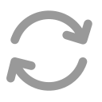
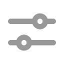

Hay una nueva versión disponible.
Conéctate a la Wi‑Fi de la esfera y abre sesión. Base: http://192.168.4.1
ESP32_C6

Conéctate a la esfera para listar archivos.
—
Simulación local sin esfera (solo desarrollo).
SSID lab: ESP32_C6. Contrato sphere-diagnostics-http/1.
sphere-diagnostics-http/1
